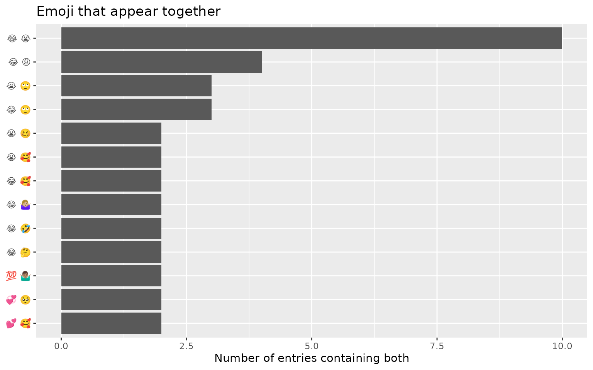
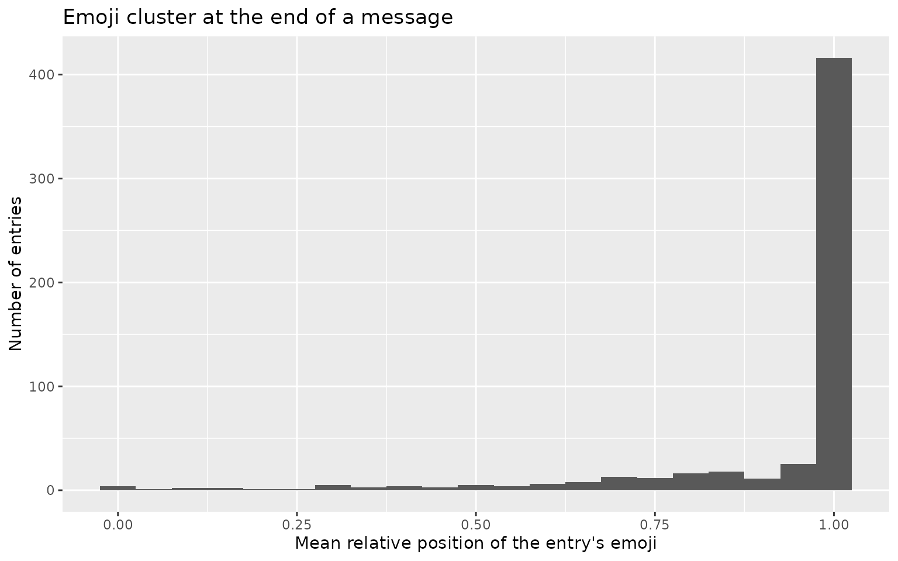

Introduction to tidyEmoji
Youzhi
Yu
University of
Chicago
Source: vignettes/introduction.Rmd
introduction.RmdOverview
Emoji are everywhere in modern text — social-media posts, product reviews, chat and support logs, survey free-text — and they carry information that plain words do not. Yet summarising emoji from a corpus is surprisingly awkward. Unicode does not interact cleanly with regular expressions, not every code point is an emoji, and a single visible emoji is often built from several code points joined together. Counting “how many posts contain an emoji” or “which emoji are most common” by hand quickly becomes painful.
tidyEmoji removes that friction. It provides a small
family of verbs that take a data frame and the name of a text column,
and return tidy data frames that drop straight into a
dplyr/ggplot2 workflow:
Two design choices are worth highlighting:
- Grapheme-aware detection. Detection is performed on whole grapheme clusters, so skin-tone modifiers (👍🏽) and zero-width-joiner sequences such as the family emoji (👨👩👧👦) are treated as a single emoji rather than being split into their component parts. This is illustrated in the extraction section.
-
Tidy by default. Every verb returns a tibble,
follows the
verb(data, text_column)convention, and supports unquoted column names, so the functions compose naturally with the pipe. Grouping composes too: the verbs that work a row at a time carry agroup_by()through to their result, asdplyr::mutate()anddplyr::filter()do, while the ones that pool across rows – the counts, the co-occurrence tables, the time series – warn that they ignore it and return one corpus-wide answer. See?tidyEmojifor the full contract.
Example data
Throughout this vignette we use a sample of text collected in Atlanta, Georgia. The data happens to come from a social-media corpus, but nothing below is specific to any platform — any data frame with a text column will do.
ata_tweets <- readr::read_csv("ata_tweets.csv", show_col_types = FALSE)
ata_tweets
#> # A tibble: 2,000 × 1
#> full_text
#> <chr>
#> 1 "Was Justin Bieber ever at any BLM March/protest this past summer? Or ever?"
#> 2 "Whole Family gone and I’m stuck here in Brunswick 😭"
#> 3 "38 years old and I still get distracted while cleaning my room. \n\nJust in…
#> 4 "This time last year I was blasting fever nonstop by Wizkid 😭"
#> 5 "Kanye is a just a black man with a lot of confidence and y’all tear him dow…
#> 6 "Feel like being my inner self today"
#> 7 "Peep toe boots irk my sole."
#> 8 "Nah the biggest naruto fans be trying call one piece long like... nigga?"
#> 9 "if my shoes don’t arrive by next Friday imma be pissed"
#> 10 "Phone dry asf 🙄"
#> # ℹ 1,990 more rowsThe actual text lives in the full_text column, which is
the column we pass to each tidyEmoji verb.
Detecting and summarising emoji
emoji_summary()
emoji_summary() answers the first question one usually
asks of a new corpus: how much emoji is in here? It returns a
one-row tibble with the number of entries that contain at least one
emoji and the total number of entries. An entry is counted once
regardless of how many emoji it holds.
summary_tbl <- ata_tweets %>%
emoji_summary(full_text)
summary_tbl
#> # A tibble: 1 × 2
#> n_with_emoji n_total
#> <int> <int>
#> 1 560 2000Here, 560 of the 2,000 entries (28%) contain at least one emoji.
emoji_filter()
emoji_filter() keeps only the rows whose text contains
at least one emoji, preserving every original column. This is useful
when you want to compare emoji-bearing and emoji-free text, or restrict
an analysis to the emoji subset. (emoji_tweets() is a
synonym retained for backward compatibility.)
ata_tweets %>%
emoji_filter(full_text)
#> # A tibble: 560 × 1
#> full_text
#> <chr>
#> 1 Whole Family gone and I’m stuck here in Brunswick 😭
#> 2 This time last year I was blasting fever nonstop by Wizkid 😭
#> 3 Phone dry asf 🙄
#> 4 When I gave my life to Christ, I was able to see people as imperfect, but st…
#> 5 Everyone needs self care days❤️
#> 6 R u sears rn 🤦🏽♀️
#> 7 Gucci wit some dope runnas head huncho top gunna u a sto runna😭
#> 8 i’m thinking insomnia cause they got this caramel apple pie cookie. 😋
#> 9 i deadass listen to the music everyday lmao🥲
#> 10 Im ona block where ya barley can be at if you try get shot down 😈
#> # ℹ 550 more rowsExtracting emoji
tidyEmoji offers three complementary ways to pull the emoji out of text, depending on the shape of output you want.
emoji_extract_nest()
emoji_extract_nest() leaves the data unchanged except
for an added list-column, .emoji_unicode, holding the emoji
found in each row. The original data structure is preserved, which makes
this convenient as an intermediate step.
ata_tweets %>%
emoji_extract_nest(full_text) %>%
select(full_text, .emoji_unicode)
#> # A tibble: 2,000 × 2
#> full_text .emoji_unicode
#> <chr> <list>
#> 1 "Was Justin Bieber ever at any BLM March/protest this past su… <chr [0]>
#> 2 "Whole Family gone and I’m stuck here in Brunswick 😭" <chr [1]>
#> 3 "38 years old and I still get distracted while cleaning my ro… <chr [0]>
#> 4 "This time last year I was blasting fever nonstop by Wizkid 😭… <chr [1]>
#> 5 "Kanye is a just a black man with a lot of confidence and y’a… <chr [0]>
#> 6 "Feel like being my inner self today" <chr [0]>
#> 7 "Peep toe boots irk my sole." <chr [0]>
#> 8 "Nah the biggest naruto fans be trying call one piece long li… <chr [0]>
#> 9 "if my shoes don’t arrive by next Friday imma be pissed" <chr [0]>
#> 10 "Phone dry asf 🙄" <chr [1]>
#> # ℹ 1,990 more rows
emoji_extract_unnest()
emoji_extract_unnest() returns a long, tidy table with
one row per (entry, emoji) pair: .row_number records the
position of the entry in the data, .emoji_unicode is the
emoji, and .emoji_count is how many times that emoji occurs
in that entry. Entries without emoji are dropped.
emoji_per_tweet <- ata_tweets %>%
emoji_extract_unnest(full_text)
emoji_per_tweet
#> # A tibble: 696 × 3
#> .row_number .emoji_unicode .emoji_count
#> <int> <chr> <int>
#> 1 2 😭 1
#> 2 4 😭 1
#> 3 10 🙄 1
#> 4 15 😂 1
#> 5 17 ❤️ 1
#> 6 30 🤦🏽♀️ 1
#> 7 31 😭 1
#> 8 33 😋 1
#> 9 42 🥲 1
#> 10 45 😈 1
#> # ℹ 686 more rowsWe can use this to plot how many emoji each emoji-bearing entry contains:
emoji_per_tweet %>%
group_by(.row_number) %>%
summarise(n_emoji = sum(.emoji_count)) %>%
ggplot(aes(n_emoji)) +
geom_bar() +
scale_x_continuous(breaks = seq(1, 15)) +
labs(x = "Number of emoji in the entry",
y = "Number of entries",
title = "Most emoji-bearing entries contain a single emoji")
The overwhelming majority of emoji-bearing entries carry just one emoji, with a long, thin tail of more emoji-heavy entries.
emoji_tokens()
emoji_tokens() produces a “one row per emoji occurrence”
table — the emoji analogue of a tidy-text token table. It keeps the
original columns and adds the glyph (.emoji) together with
its name (.emoji_name), category
(.emoji_category) and sentiment score
(.emoji_sentiment). This single call gives you everything
needed for counting, joining and plotting.
ata_tweets %>%
emoji_tokens(full_text)
#> # A tibble: 900 × 5
#> full_text .emoji .emoji_name .emoji_category .emoji_sentiment
#> <chr> <chr> <chr> <chr> <dbl>
#> 1 Whole Family gone and I’… 😭 loudly cry… Smileys & Emot… -0.0934
#> 2 This time last year I wa… 😭 loudly cry… Smileys & Emot… -0.0934
#> 3 Phone dry asf 🙄 🙄 face with … Smileys & Emot… NA
#> 4 When I gave my life to C… 😂 face with … Smileys & Emot… 0.221
#> 5 Everyone needs self care… ❤️ red heart Smileys & Emot… 0.746
#> 6 R u sears rn 🤦🏽♀️ 🤦🏽♀️ woman face… People & Body NA
#> 7 Gucci wit some dope runn… 😭 loudly cry… Smileys & Emot… -0.0934
#> 8 i’m thinking insomnia ca… 😋 face savor… Smileys & Emot… 0.634
#> 9 i deadass listen to the … 🥲 smiling fa… Smileys & Emot… NA
#> 10 Im ona block where ya ba… 😈 smiling fa… Smileys & Emot… 0.268
#> # ℹ 890 more rowsA note on grapheme-aware detection
Modern emoji are frequently composed of several code points: a base emoji plus a skin-tone modifier, or several emoji joined by zero-width joiners. tidyEmoji detects emoji at the level of grapheme clusters, so these stay intact. The example below contains exactly two emoji — one family and one thumbs-up — and tidyEmoji counts them as such rather than splitting the family into four people or separating the thumb from its skin tone:
demo <- data.frame(
text = c("our family \U0001F468\U0001F469\U0001F467\U0001F466",
"great work \U0001F44D\U0001F3FD")
)
demo %>%
emoji_extract_unnest(text)
#> # A tibble: 2 × 3
#> .row_number .emoji_unicode .emoji_count
#> <int> <chr> <int>
#> 1 1 👨👩👧👦 1
#> 2 2 👍🏽 1Counting emoji across the corpus
emoji_frequency()
emoji_frequency() counts how often each emoji appears
across the whole text column (an entry containing the same emoji twice
contributes 2) and returns the result sorted by descending count,
annotated with each emoji’s name, shortcode and category.
ata_tweets %>%
emoji_frequency(full_text)
#> # A tibble: 187 × 5
#> emoji name shortcode group n
#> <chr> <chr> <chr> <chr> <int>
#> 1 😂 face with tears of joy joy Smil… 160
#> 2 😭 loudly crying face sob Smil… 98
#> 3 😩 weary face weary Smil… 34
#> 4 🤣 rolling on the floor laughing rofl Smil… 34
#> 5 🥺 pleading face pleading_face Smil… 29
#> 6 🙄 face with rolling eyes roll_eyes Smil… 22
#> 7 🥴 woozy face woozy_face Smil… 21
#> 8 💯 hundred points 100 Smil… 20
#> 9 😍 smiling face with heart-eyes heart_eyes Smil… 20
#> 10 🥰 smiling face with hearts smiling_face_with_three_hear… Smil… 20
#> # ℹ 177 more rows
top_n_emojis()
When you only need the leaders, top_n_emojis() is a
convenience wrapper around emoji_frequency() that returns
the n most frequent emoji (default
n = 20).
top_20_emojis <- ata_tweets %>%
top_n_emojis(full_text)
top_20_emojis
#> # A tibble: 20 × 4
#> emoji_name unicode emoji_category n
#> <chr> <chr> <chr> <int>
#> 1 joy 😂 Smileys & Emotion 160
#> 2 sob 😭 Smileys & Emotion 98
#> 3 weary 😩 Smileys & Emotion 34
#> 4 rofl 🤣 Smileys & Emotion 34
#> 5 pleading_face 🥺 Smileys & Emotion 29
#> 6 roll_eyes 🙄 Smileys & Emotion 22
#> 7 woozy_face 🥴 Smileys & Emotion 21
#> 8 100 💯 Smileys & Emotion 20
#> 9 heart_eyes 😍 Smileys & Emotion 20
#> 10 smiling_face_with_three_hearts 🥰 Smileys & Emotion 20
#> 11 bangbang ‼️ Symbols 14
#> 12 folded_hands_medium_dark_skin_tone 🙏🏾 People & Body 12
#> 13 heart ❤️ Smileys & Emotion 11
#> 14 skull 💀 Smileys & Emotion 10
#> 15 unamused 😒 Smileys & Emotion 10
#> 16 rage 😡 Smileys & Emotion 10
#> 17 sparkles ✨ Activities 9
#> 18 eyes 👀 People & Body 9
#> 19 relieved 😌 Smileys & Emotion 9
#> 20 raising_hands_medium_dark_skin_tone 🙌🏾 People & Body 9Plotting the top 20, coloured by category, gives an immediate sense of how the community expresses itself:
top_20_emojis %>%
mutate(emoji_name = stringr::str_replace_all(emoji_name, "_", " "),
emoji_name = forcats::fct_reorder(emoji_name, n)) %>%
ggplot(aes(n, emoji_name, fill = emoji_category)) +
geom_col() +
labs(x = "Count",
y = NULL,
fill = "Category",
title = "The 20 most frequent emoji")
The unicode column holds the actual glyph, should you
wish to render the emoji themselves on a plot (this requires a graphics
device with an emoji-capable font). You can also request a different
number of emoji:
ata_tweets %>%
top_n_emojis(full_text, n = 10) %>%
mutate(emoji_name = stringr::str_replace_all(emoji_name, "_", " "),
emoji_name = forcats::fct_reorder(emoji_name, n)) %>%
ggplot(aes(n, emoji_name, fill = emoji_category)) +
geom_col() +
labs(x = "Count", y = NULL, fill = "Category",
title = "The 10 most frequent emoji")
Categorising emoji
The Unicode standard organises emoji into 10 categories (see
?category_unicode_crosswalk).
emoji_categorize() keeps the emoji-bearing rows and adds a
.emoji_category column listing the distinct categories
present in each row, separated by | when a row spans more
than one.
ata_emoji_category <- ata_tweets %>%
emoji_categorize(full_text) %>%
select(.emoji_category)
ata_emoji_category
#> # A tibble: 560 × 1
#> .emoji_category
#> <chr>
#> 1 Smileys & Emotion
#> 2 Smileys & Emotion
#> 3 Smileys & Emotion
#> 4 Smileys & Emotion
#> 5 Smileys & Emotion
#> 6 People & Body
#> 7 Smileys & Emotion
#> 8 Smileys & Emotion
#> 9 Smileys & Emotion
#> 10 Smileys & Emotion
#> # ℹ 550 more rowsWe can tally the most common category combinations:
ata_emoji_category %>%
count(.emoji_category, sort = TRUE) %>%
filter(n > 20) %>%
mutate(.emoji_category = forcats::fct_reorder(.emoji_category, n)) %>%
ggplot(aes(n, .emoji_category)) +
geom_col() +
labs(x = "Number of entries", y = NULL,
title = "Most common emoji category combinations")
To count the 10 individual categories rather than their combinations,
split the .emoji_category strings on | with
tidyr::separate_rows():
ata_emoji_category %>%
tidyr::separate_rows(.emoji_category, sep = "\\|") %>%
count(.emoji_category, sort = TRUE) %>%
mutate(.emoji_category = forcats::fct_reorder(.emoji_category, n)) %>%
ggplot(aes(n, .emoji_category)) +
geom_col() +
labs(x = "Number of entries", y = NULL,
title = "Emoji category usage")
“Smileys & Emotion” dominates, followed by “People & Body”. Note that an entry spanning several categories is counted once in each, so these counts can exceed the number of emoji-bearing entries.
emoji_type(): faces versus everything else
The consumer-behaviour literature repeatedly contrasts
emotional (face) emoji with semantic (object) emoji
and finds that the two have different effects on engagement.
emoji_type() recodes the Unicode group and subgroup into
that smaller functional vocabulary, and emoji_faceness()
reduces it to a single per-entry share:
ata_tweets %>%
emoji_type(full_text) %>%
count(.emoji_type, sort = TRUE) %>%
head(5)
#> # A tibble: 5 × 2
#> .emoji_type n
#> <chr> <int>
#> 1 NA 1440
#> 2 face 364
#> 3 gesture 54
#> 4 symbol 42
#> 5 face|symbol 17
ata_tweets %>%
emoji_faceness(full_text) %>%
summarise(mean_faceness = mean(.emoji_faceness, na.rm = TRUE),
all_faces = sum(.emoji_faceness == 1, na.rm = TRUE))
#> # A tibble: 1 × 2
#> mean_faceness all_faces
#> <dbl> <int>
#> 1 0.694 364as_emoji_type() is the vector-level version, for typing
a glyph you already have in hand.
Scoring emoji sentiment
emoji_sentiment()
Emoji are a strong sentiment signal, and
emoji_sentiment() surfaces it directly. It adds
.emoji_n (the number of emoji in the entry),
.emoji_n_scored (the number that appear in the lexicon),
and .emoji_sentiment (the mean sentiment of the scored
emoji, from -1 to +1). Scores come from the bundled
emoji_sentiment_lexicon (described below); entries with no
emoji, or whose emoji are not in the lexicon, receive
NA.
ata_sentiment <- ata_tweets %>%
emoji_sentiment(full_text)
ata_sentiment %>%
select(.emoji_n, .emoji_sentiment)
#> # A tibble: 2,000 × 2
#> .emoji_n .emoji_sentiment
#> <int> <dbl>
#> 1 0 NA
#> 2 1 -0.0934
#> 3 0 NA
#> 4 1 -0.0934
#> 5 0 NA
#> 6 0 NA
#> 7 0 NA
#> 8 0 NA
#> 9 0 NA
#> 10 1 NA
#> # ℹ 1,990 more rowsSentiment distribution
Looking across the entries that contain at least one scored emoji:
ata_sentiment %>%
filter(!is.na(.emoji_sentiment)) %>%
ggplot(aes(.emoji_sentiment)) +
geom_histogram(binwidth = 0.1) +
labs(x = "Mean emoji sentiment",
y = "Number of entries",
title = "Emoji sentiment skews positive")
As is typical of social-media text, emoji sentiment leans strongly positive.
Sentiment by category
Because emoji_tokens() attaches a sentiment score to
every emoji occurrence, we can summarise average sentiment by category
in a couple of lines:
ata_tweets %>%
emoji_tokens(full_text) %>%
group_by(.emoji_category) %>%
summarise(mean_sentiment = mean(.emoji_sentiment, na.rm = TRUE),
n_scored = sum(!is.na(.emoji_sentiment))) %>%
filter(n_scored > 0) %>%
mutate(.emoji_category = forcats::fct_reorder(.emoji_category, mean_sentiment)) %>%
ggplot(aes(mean_sentiment, .emoji_category)) +
geom_col() +
labs(x = "Mean sentiment", y = NULL,
title = "Average emoji sentiment by category")
The sentiment lexicon
The scores come from emoji_sentiment_lexicon, the
Emoji Sentiment Ranking of Kralj Novak et al. (2015), computed
from around 70,000 tweets annotated in 13 European languages. You can
work with it directly — for instance, to find the most positive and most
negative reasonably common emoji:
emoji_sentiment_lexicon %>%
filter(occurrences >= 500) %>%
slice_max(sentiment_score, n = 8) %>%
select(emoji, unicode_name, occurrences, sentiment_score)
#> emoji unicode_name occurrences sentiment_score
#> 1 ❤ HEAVY BLACK HEART 8050 0.7460870
#> 2 💞 REVOLVING HEARTS 687 0.7423581
#> 3 🎉 PARTY POPPER 1125 0.7395556
#> 4 💃 DANCER 1344 0.7358631
#> 5 💙 BLUE HEART 912 0.7324561
#> 6 💖 SPARKLING HEART 1263 0.7133808
#> 7 💛 YELLOW HEART 602 0.7126246
#> 8 😘 FACE THROWING A KISS 3648 0.7017544
emoji_sentiment_lexicon %>%
filter(occurrences >= 500) %>%
slice_min(sentiment_score, n = 8) %>%
select(emoji, unicode_name, occurrences, sentiment_score)
#> emoji unicode_name occurrences sentiment_score
#> 1 😒 UNAMUSED FACE 1385 -0.37472924
#> 2 😩 WEARY FACE 1808 -0.36836283
#> 3 🔫 PISTOL 604 -0.19536424
#> 4 😡 POUTING FACE 756 -0.17328042
#> 5 😔 PENSIVE FACE 1205 -0.14605809
#> 6 😞 DISAPPOINTED FACE 532 -0.11842105
#> 7 😭 LOUDLY CRYING FACE 5526 -0.09337676
#> 8 😴 SLEEPING FACE 718 -0.08077994Interpretation risk: how much do readers disagree?
The most practically important fact about emoji is that people do not agree on what they mean. Miller et al. (2016) showed the same rendering to many readers and found they disagreed about whether it was positive, neutral or negative around a quarter of the time.
That disagreement was already inside the package. The Emoji Sentiment
Ranking keeps the raw
negative/neutral/positive
annotation counts behind its collapsed score, which is an empirical
interpretation distribution per glyph. emoji_ambiguity()
reads it out:
emoji_ambiguity() %>%
filter(n_annotations > 500) %>%
head(5)
#> # A tibble: 5 × 8
#> emoji key n_annotations p_neg p_neu p_pos ambiguity rank
#> <chr> <chr> <int> <dbl> <dbl> <dbl> <dbl> <int>
#> 1 😳 1F633 846 0.327 0.327 0.345 1.10 6
#> 2 💯 1F4AF 637 0.281 0.317 0.402 1.09 16
#> 3 😴 1F634 718 0.422 0.237 0.341 1.07 43
#> 4 😢 1F622 749 0.385 0.224 0.391 1.07 47
#> 5 😱 1F631 1130 0.264 0.282 0.454 1.07 50Because the measure is a property of the glyph, the corpus-level question – “which of my emoji are most likely to be misread?” – is one call:
ata_tweets %>%
emoji_flag_ambiguous(full_text, top_n = 5)
#> # A tibble: 5 × 6
#> emoji name n n_annotations ambiguity rank
#> <chr> <chr> <int> <int> <dbl> <int>
#> 1 😳 flushed face 3 846 1.10 6
#> 2 💣 bomb 2 131 1.09 10
#> 3 💯 hundred points 20 637 1.09 16
#> 4 😯 hushed face 1 62 1.08 20
#> 5 💔 broken heart 5 328 1.08 22emoji_risk() is the per-entry version, and the pair
.emoji_n / .emoji_n_scored keeps the coverage
honest: an entry whose emoji are absent from the lexicon is not a
low-risk entry, it is an unmeasured one.
ata_tweets %>%
emoji_risk(full_text) %>%
filter(.emoji_n > 1) %>%
select(.emoji_n, .emoji_n_scored, .emoji_ambiguity_mean,
.emoji_n_ambiguous) %>%
head(5)
#> # A tibble: 5 × 4
#> .emoji_n .emoji_n_scored .emoji_ambiguity_mean .emoji_n_ambiguous
#> <int> <int> <dbl> <int>
#> 1 2 2 1.06 2
#> 2 2 2 1.06 2
#> 3 2 2 0.973 1
#> 4 2 2 1.06 2
#> 5 3 2 0.889 1The same counts also put an error bar on the sentiment score itself.
A glyph annotated eight times should not carry the authority of one
annotated eight thousand times, and
emoji_sentiment(se = TRUE) says so:
ata_tweets %>%
emoji_sentiment(full_text, se = TRUE) %>%
filter(!is.na(.emoji_sentiment)) %>%
select(.emoji_n_scored, .emoji_sentiment, .emoji_sentiment_se) %>%
head(5)
#> # A tibble: 5 × 3
#> .emoji_n_scored .emoji_sentiment .emoji_sentiment_se
#> <int> <dbl> <dbl>
#> 1 1 -0.0934 0.0118
#> 2 1 -0.0934 0.0118
#> 3 1 0.221 0.00675
#> 4 1 0.746 0.00587
#> 5 1 -0.0934 0.0118Scoring emoji emotions
Valence (negative↔︎positive) is only one affective dimension.
emoji_emotion() goes further, scoring each entry’s emoji
across the eight Plutchik emotions (anger, anticipation, disgust, fear,
joy, sadness, surprise, trust) using the bundled EmoTag1200 lexicon
(Shoeb & de Melo, 2020). Scores are in [0, 1].
ata_emotion <- ata_tweets %>%
emoji_emotion(full_text)
ata_emotion %>%
select(.emoji_joy, .emoji_trust, .emoji_anger, .emoji_n)
#> # A tibble: 2,000 × 4
#> .emoji_joy .emoji_trust .emoji_anger .emoji_n
#> <dbl> <dbl> <dbl> <int>
#> 1 NA NA NA 0
#> 2 0 0.08 0.22 1
#> 3 NA NA NA 0
#> 4 0 0.08 0.22 1
#> 5 NA NA NA 0
#> 6 NA NA NA 0
#> 7 NA NA NA 0
#> 8 NA NA NA 0
#> 9 NA NA NA 0
#> 10 NA NA NA 1
#> # ℹ 1,990 more rowsA quick way to read the result is the dominant emotion per entry:
ata_tweets %>%
emoji_emotion_label(full_text) %>%
count(.emoji_emotion, sort = TRUE)
#> # A tibble: 9 × 2
#> .emoji_emotion n
#> <chr> <int>
#> 1 NA 1639
#> 2 joy 166
#> 3 sadness 115
#> 4 anticipation 30
#> 5 surprise 15
#> 6 anger 12
#> 7 disgust 11
#> 8 fear 10
#> 9 trust 2The emotion scores join through the same codepoint-normalised key as
sentiment, so emoji carrying the U+FE0F variation selector
resolve correctly.
Bringing your own lexicon
Sentiment and emotion scoring share one pluggable engine.
emoji_lexicons() lists the bundled lexicons (plus any you
have registered):
emoji_lexicons()
#> # A tibble: 2 × 6
#> name type dimensions n source licence
#> <chr> <chr> <I<list>> <int> <chr> <chr>
#> 1 novak2015 sentiment <chr [1]> 969 Kralj Novak et al. (2015), PLoS… CC BY-…
#> 2 emotag1200 emotion <chr [8]> 150 Shoeb & de Melo (2020), EMNLP 2… MITemoji_score() is the generic scorer underneath
emoji_sentiment(): give it any data frame with an emoji
column and a score column — say, scores tailored to your own domain —
and it returns the per-row mean, joined through the same
codepoint-normalised key as everything else:
my_lexicon <- data.frame(
emoji = c("\U0001f600", "\U0001f621", "\U0001f637"),
score = c(1, -1, -0.5)
)
data.frame(text = c("great \U0001f600", "bad \U0001f621\U0001f637", "none")) %>%
emoji_score(text, lexicon = my_lexicon)
#> # A tibble: 3 × 4
#> text .emoji_score .emoji_n_scored .emoji_n
#> <chr> <dbl> <int> <int>
#> 1 great 😀 1 1 1
#> 2 bad 😡😷 -0.75 2 2
#> 3 none NA NA 0register_emoji_lexicon() stores a lexicon under a name
for the session, so you can refer to it in emoji_score() —
or in emoji_emotion(), if it carries emotion columns:
register_emoji_lexicon("mine", my_lexicon)
emoji_lexicons() %>% filter(name == "mine")
#> # A tibble: 1 × 6
#> name type dimensions n source licence
#> <chr> <chr> <I<list>> <int> <chr> <chr>
#> 1 mine custom <chr [1]> 3 user-registered NARelating emoji: co-occurrence and sequences
Which emoji appear together? emoji_pairs()
returns a tidy edge list — one row per pair of distinct emoji that
co-occur in the same entry, with the number of entries in which they do.
The item1/item2/n shape matches
widyr::pairwise_count() and feeds directly into graph tools
such as igraph, tidygraph and ggraph:
emoji_edges <- ata_tweets %>%
emoji_pairs(full_text)
emoji_edges
#> # A tibble: 213 × 3
#> item1 item2 n
#> <chr> <chr> <int>
#> 1 😂 😭 10
#> 2 😂 😩 4
#> 3 😂 🙄 3
#> 4 😭 🙄 3
#> 5 💕 🥰 2
#> 6 💞 🥺 2
#> 7 💯 🤷🏽♂️ 2
#> 8 😂 🤔 2
#> 9 😂 🤣 2
#> 10 😂 🤷🏼♀️ 2
#> # ℹ 203 more rowsThe strongest pairings make a readable chart on their own:
emoji_edges %>%
slice_max(n, n = 10) %>%
mutate(pair = paste(item1, item2),
pair = forcats::fct_reorder(pair, n)) %>%
ggplot(aes(n, pair)) +
geom_col() +
labs(x = "Number of entries containing both", y = NULL,
title = "Emoji that appear together")
Set directed = TRUE to order each pair by first
appearance, or supply doc_id to pool several rows (a
conversation, a user, a day) into one document.
emoji_cooccurrence(diagonal = TRUE) additionally returns
each emoji’s document frequency on the diagonal.
Order also matters within an entry.
emoji_ngrams() slides a window over each entry’s emoji in
reading order (any text in between is ignored), which is the raw
material for sequence and Markov-style analyses:
ata_tweets %>%
emoji_ngrams(full_text) %>%
count(.emoji_ngram, sort = TRUE)
#> # A tibble: 158 × 2
#> .emoji_ngram n
#> <chr> <int>
#> 1 😂 😂 66
#> 2 😭 😭 27
#> 3 😍 😍 13
#> 4 🥺 🥺 13
#> 5 🤣 🤣 10
#> 6 😭 😂 8
#> 7 🖕🏻 🖕🏻 7
#> 8 😡 😡 5
#> 9 🙏🏾 🙏🏾 5
#> 10 💀 💀 4
#> # ℹ 148 more rowsAll the relational verbs canonicalise glyphs through the same codepoint-normalised key as the rest of the package, so qualified and unqualified forms of one emoji count as a single node.
The words around an emoji
Which emoji occurred is only half the story: emoji are polysemous,
and their reading is decided by the co-text.
emoji_context() returns one row per occurrence with a
window of the surrounding text. Other emoji are blanked out of the
window, so a neighbouring glyph never leaks into it:
ata_tweets %>%
emoji_context(full_text, window = 4) %>%
select(.row_number, .emoji, .emoji_context) %>%
head(5)
#> # A tibble: 5 × 3
#> .row_number .emoji .emoji_context
#> <int> <chr> <chr>
#> 1 2 😭 stuck here in Brunswick
#> 2 4 😭 fever nonstop by Wizkid
#> 3 10 🙄 Phone dry asf
#> 4 15 😂 lot of white girls . I thought it
#> 5 17 ❤️ needs self care daysAggregated over a corpus, those windows give the emoji-word associations that a sense inventory would otherwise have to supply – derived from your own data, so they are neither stale nor licence-encumbered:
ata_tweets %>%
emoji_collocations(full_text, window = 4, min_n = 5) %>%
head(10)
#> # A tibble: 10 × 4
#> emoji word n pmi
#> <chr> <chr> <int> <dbl>
#> 1 🙌🏾 god 5 4.31
#> 2 🖕🏻 underdogs 8 3.93
#> 3 😍 lacking 11 3.49
#> 4 😍 strapped 11 3.49
#> 5 😍 yess 11 3.49
#> 6 🥺 everytime 7 3.44
#> 7 🥺 greys 7 3.44
#> 8 🥺 accepted 5 3.44
#> 9 🥺 clemson 5 3.44
#> 10 🥺 into 5 3.44Tokenisation stops at whitespace on purpose. If you need stemming or
stopword removal, hand the result to tidytext rather than
expecting this verb to grow a tokeniser.
Measuring how emoji are used
Where emoji sit and how much of the text they
occupy are studied signals in their own right.
emoji_position() reports each entry’s first and last emoji
position and the mean relative position from 0 (start) to 1 (end):
ata_tweets %>%
emoji_position(full_text) %>%
filter(!is.na(.emoji_rel_position)) %>%
ggplot(aes(.emoji_rel_position)) +
geom_histogram(binwidth = 0.05) +
labs(x = "Mean relative position of the entry's emoji",
y = "Number of entries",
title = "Emoji cluster at the end of a message")
emoji_density() normalises the emoji count by text
length (per character and per whitespace-delimited token), and
emoji_ratio() reports what share of the text’s characters
belong to emoji — including an .emoji_only flag for entries
that are nothing but emoji (and whitespace):
Emoji over time
Almost every substantive emoji study is longitudinal. Our sample has no timestamp, so the dates below are synthetic – they illustrate the mechanics, not a finding:
dated <- ata_tweets %>%
mutate(posted_at = as.Date("2021-01-01") + (seq_len(n()) - 1) %% 540)
dated %>%
emoji_trend(full_text, posted_at, by = "quarter", top_n = 3)
#> # A tibble: 18 × 5
#> .period emoji name n share
#> <date> <chr> <chr> <int> <dbl>
#> 1 2021-01-01 😂 face with tears of joy 31 0.194
#> 2 2021-01-01 😭 loudly crying face 17 0.106
#> 3 2021-01-01 😩 weary face 9 0.0562
#> 4 2021-04-01 😂 face with tears of joy 42 0.214
#> 5 2021-04-01 😩 weary face 8 0.0408
#> 6 2021-04-01 😭 loudly crying face 8 0.0408
#> 7 2021-07-01 😭 loudly crying face 26 0.166
#> 8 2021-07-01 😂 face with tears of joy 22 0.140
#> 9 2021-07-01 😩 weary face 3 0.0191
#> 10 2021-10-01 😂 face with tears of joy 34 0.221
#> 11 2021-10-01 😭 loudly crying face 13 0.0844
#> 12 2021-10-01 😩 weary face 9 0.0584
#> 13 2022-01-01 😂 face with tears of joy 18 0.157
#> 14 2022-01-01 😭 loudly crying face 12 0.104
#> 15 2022-01-01 😩 weary face 4 0.0348
#> 16 2022-04-01 😭 loudly crying face 22 0.186
#> 17 2022-04-01 😂 face with tears of joy 13 0.110
#> 18 2022-04-01 😩 weary face 1 0.00847emoji_turnover() asks a different question – not how
often an emoji is used but how much of the repertoire changes
from one period to the next:
dated %>%
emoji_turnover(full_text, posted_at, by = "quarter")
#> # A tibble: 5 × 8
#> .period .period_prev n_types_prev n_types jaccard n_new n_lost n_core
#> <date> <date> <int> <int> <dbl> <int> <int> <int>
#> 1 2021-04-01 2021-01-01 56 79 0.298 48 25 31
#> 2 2021-07-01 2021-04-01 79 57 0.225 32 54 25
#> 3 2021-10-01 2021-07-01 57 65 0.232 42 34 23
#> 4 2022-01-01 2021-10-01 65 56 0.260 31 40 25
#> 5 2022-04-01 2022-01-01 56 49 0.25 28 35 21Two of the time verbs need no timestamp at all, because the reference table already records the Unicode version that introduced each glyph. That makes “how new is this corpus’s emoji vocabulary?” a single call:
ata_tweets %>%
emoji_version_profile(full_text) %>%
head(8)
#> # A tibble: 8 × 7
#> version version_num release_date n_types n_tokens share_types share_tokens
#> <chr> <dbl> <date> <int> <int> <dbl> <dbl>
#> 1 0.6 0.6 2010-10-11 74 517 0.396 0.574
#> 2 0.7 0.7 2014-06-16 1 4 0.00535 0.00444
#> 3 1.0 1 2015-06-09 44 126 0.235 0.14
#> 4 2.0 2 2015-11-12 1 1 0.00535 0.00111
#> 5 3.0 3 2016-06-21 17 58 0.0909 0.0644
#> 6 4.0 4 2016-11-22 17 38 0.0909 0.0422
#> 7 5.0 5 2017-06-20 8 19 0.0428 0.0211
#> 8 11.0 11 2018-06-05 8 84 0.0428 0.0933With real timestamps, emoji_adoption_lag() goes one step
further and compares each glyph’s first appearance in the corpus with
its Unicode release date – see emoji_unicode_releases() for
that lookup, and emoji_seasonality() for month-of-year,
day-of-week and hour-of-day cycles.
Emoji as model features
For classification and regression work, emoji_dfm()
turns the corpus into a document-by-emoji feature table: one row per
entry (or per doc_id), one column per emoji, weighted by
counts, binary presence or tf-idf. Every entry is kept — emoji-free rows
are all zeros — so the table binds row-for-row to your outcome
columns:
ata_tweets %>%
emoji_dfm(full_text, weighting = "tfidf") %>%
select(1:6)
#> # A tibble: 2,000 × 6
#> .row_number `😂` `😭` `😩` `🤣` `🥺`
#> <int> <dbl> <dbl> <dbl> <dbl> <dbl>
#> 1 1 0 0 0 0 0
#> 2 2 0 3.34 0 0 0
#> 3 3 0 0 0 0 0
#> 4 4 0 3.34 0 0 0
#> 5 5 0 0 0 0 0
#> 6 6 0 0 0 0 0
#> 7 7 0 0 0 0 0
#> 8 8 0 0 0 0 0
#> 9 9 0 0 0 0 0
#> 10 10 0 0 0 0 0
#> # ℹ 1,990 more rowsText-emoji mismatch
Two separate literatures converge on one statistic. NLP sarcasm detection uses emoji-text sentiment incongruity as a feature; marketing research finds that a mismatch between a review’s words and its emoji lowers perceived helpfulness and authenticity. Both want the same number.
tidyEmoji deliberately does not score text – that choice belongs in
your script, where the method is visible. Here is a deliberately crude
word-list scorer standing in for tidytext + AFINN,
sentimentr or a transformer:
positive <- c("love", "great", "best", "happy", "good", "thanks", "beautiful")
negative <- c("hate", "worst", "bad", "sad", "awful", "sick", "tired")
scored <- ata_tweets %>%
mutate(text_score = vapply(
strsplit(tolower(full_text), "[^a-z]+"),
function(w) as.numeric(sum(w %in% positive) - sum(w %in% negative)),
numeric(1)
))scale has no default: AFINN runs -5 to 5, VADER -1 to 1,
and a model’s logits on nothing in particular, so you have to say how
the two sides were made comparable. "rank" puts both on
percentiles and is the safest choice.
incong <- scored %>%
emoji_incongruity(full_text, text_score, scale = "rank")
incong %>%
filter(!is.na(.emoji_incongruity)) %>%
count(.emoji_polarity_flip)
#> # A tibble: 2 × 2
#> .emoji_polarity_flip n
#> <lgl> <int>
#> 1 FALSE 358
#> 2 TRUE 15
incong %>%
filter(.emoji_polarity_flip) %>%
select(full_text, .emoji_sentiment, text_score) %>%
head(3)
#> # A tibble: 3 × 3
#> full_text .emoji_sentiment text_score
#> <chr> <dbl> <dbl>
#> 1 zay hilfiger went from juju on that BEAT , to juj… 0.0245 -1
#> 2 Worst story 📖 I heard. I guy I met bought 200 sha… 0.176 -1
#> 3 Ew don’t you hate when a hoe watch you and you do… 0.221 -1Note what happens to entries with no scorable emoji: they get
NA, never 0. A neutral emoji and no emoji at
all are different states, and collapsing them biases every model
downstream. emoji_incongruity_profile() aggregates the same
numbers by glyph, and emoji_congruence() is the identical
engine under the marketing framing.
scored %>%
emoji_incongruity_profile(full_text, text_score, scale = "rank", min_n = 10)
#> # A tibble: 9 × 7
#> emoji name n mean_incongruity sd_incongruity n_flips flip_rate
#> <chr> <chr> <int> <dbl> <dbl> <int> <dbl>
#> 1 😂 face with tears… 160 0.233 0.382 9 0.0562
#> 2 😭 loudly crying f… 98 -0.265 0.400 3 0.0306
#> 3 😩 weary face 34 -0.587 0.476 1 0.0294
#> 4 💯 hundred points 20 0.0123 0.278 0 0
#> 5 😍 smiling face wi… 20 0.876 0.223 0 0
#> 6 ❤️ red heart 11 0.967 0.129 0 0
#> 7 💀 skull 10 -0.620 0.255 0 0
#> 8 😒 unamused face 10 -0.892 0.00850 0 0
#> 9 😡 enraged face 10 -0.447 0.320 0 0Translating emoji to and from text
Replacing emoji with words is useful for accessibility (screen
readers) and as an NLP normalisation step before tokenising.
emoji_to_text() does this for a whole column, in either
Unicode-name or shortcode form; text_to_emoji() is the
inverse.
demo <- data.frame(text = "great \U0001f600 love \u2764\ufe0f")
demo %>% emoji_to_text(text, format = "name")
#> # A tibble: 1 × 1
#> text
#> <chr>
#> 1 great grinning face love red heart
demo %>% emoji_to_text(text, format = "shortcode")
#> # A tibble: 1 × 1
#> text
#> <chr>
#> 1 great :grinning: love :heart:
demo %>%
emoji_to_text(text, format = "shortcode") %>%
text_to_emoji(text)
#> # A tibble: 1 × 1
#> text
#> <chr>
#> 1 great 😀 love ❤️Note that the qualified heart (which carries the U+FE0F
variation selector) translates just as reliably as any other emoji,
thanks to the normalised join key. For ad-hoc, vector-level use there
are also as_emoji_name(), as_emoji_shortcode()
and as_emoji():
as_emoji_name(c("\U0001f600", "\u2764\ufe0f"))
#> [1] "grinning face" "red heart"
as_emoji_shortcode(c("\U0001f600", "\u2764\ufe0f"))
#> [1] "grinning" "heart"
as_emoji(c("grinning", "heart"))
#> [1] "😀" "❤️"Searching the emoji catalogue
emoji_search() looks emoji up by keyword, name or
shortcode (case-insensitive, literal matching), returning a tidy tibble
you can filter further or feed into the other verbs:
emoji_search("happy")
#> # A tibble: 27 × 5
#> emoji name shortcode group keyword
#> <chr> <chr> <chr> <chr> <chr>
#> 1 😀 grinning face grinning Smileys … happy
#> 2 😃 grinning face with big eyes smiley Smileys … happy
#> 3 😄 grinning face with smiling eyes smile Smileys … happy
#> 4 😁 beaming face with smiling eyes grin Smileys … happy
#> 5 😆 grinning squinting face laughing Smileys … happy
#> 6 🤣 rolling on the floor laughing rofl Smileys … happy
#> 7 😂 face with tears of joy joy Smileys … happy
#> 8 🙂 slightly smiling face slightly_smiling_face Smileys … happy
#> 9 😇 smiling face with halo innocent Smileys … happy
#> 10 ☺ smiling face smiling_face Smileys … happy
#> # ℹ 17 more rows
emoji_search("celebration")
#> # A tibble: 27 × 5
#> emoji name shortcode group keyword
#> <chr> <chr> <chr> <chr> <chr>
#> 1 🥳 partying face partying_face Smileys & Emotion celebration
#> 2 🙌 raising hands raised_hands People & Body celebration
#> 3 🎅 Santa Claus santa People & Body celebration
#> 4 🤶 Mrs. Claus mrs_claus People & Body celebration
#> 5 🧑🎄 Mx Claus mx_claus People & Body celebration
#> 6 🎂 birthday cake birthday Food & Drink celebration
#> 7 🍾 bottle with popping cork champagne Food & Drink celebration
#> 8 🎃 jack-o-lantern jack_o_lantern Activities celebration
#> 9 🎄 Christmas tree christmas_tree Activities celebration
#> 10 🎆 fireworks fireworks Activities celebration
#> # ℹ 17 more rowsEmoji in language-model pipelines
Emoji are now a preprocessing decision in every LLM pipeline, and the
decision matters: they inflate token counts several-fold, and models
disambiguate them poorly. emoji_token_cost() gives the
exact sizes plus a clearly-labelled estimate – pass your real tokeniser
through tokenizer when the number matters:
ata_tweets %>%
emoji_token_cost(full_text) %>%
filter(.emoji_n > 0) %>%
summarise(emoji = sum(.emoji_n),
bytes = sum(.emoji_bytes),
codepoints = sum(.emoji_codepoints),
est_tokens = sum(.emoji_token_estimate))
#> # A tibble: 1 × 4
#> emoji bytes codepoints est_tokens
#> <int> <int> <int> <int>
#> 1 900 4437 1166 2245emoji_sanitize() then applies one named policy
to the column. The capability is not new – most of it exists across
emoji_to_text() and the extraction verbs – but the named
argument shows up in a script diff and in a methods section, which is
the point:
demo_llm <- data.frame(text = "ship it \U0001f680 today")
for (p in c("keep", "strip", "name", "shortcode", "placeholder")) {
cat(format(p, width = 12), emoji_sanitize(demo_llm, text, policy = p)$text,
"\n")
}
#> keep ship it 🚀 today
#> strip ship it today
#> name ship it rocket today
#> shortcode ship it :rocket: today
#> placeholder ship it [emoji] todayRecording provenance
“Emoji” is not a fixed object. Which glyphs exist, what they are
called and which lexicon scored them all depend on versions, and a
result is not reproducible without them. emoji_provenance()
puts the lot in one row you can paste into a methods section:
emoji_provenance() %>% glimpse()
#> Rows: 1
#> Columns: 7
#> $ tidyEmoji <chr> "0.4.0"
#> $ emoji_pkg <chr> "16.0.0"
#> $ unicode_emoji <chr> "16.0"
#> $ n_emoji <int> 5042
#> $ sentiment_lexicon <chr> "novak2015 (969 emoji)"
#> $ emotion_lexicon <chr> "emotag1200 (150 emoji)"
#> $ R <chr> "4.6.1"Bundled datasets
tidyEmoji ships four datasets, each documented with its own help page:
-
emoji_sentiment_lexicon— emoji sentiment scores from the Emoji Sentiment Ranking (see?emoji_sentiment_lexicon). -
emoji_emotion_lexicon— emoji emotion scores from EmoTag1200 (see?emoji_emotion_lexicon). -
emoji_unicode_crosswalk— one row per emoji name, mapping names / shortcodes to glyphs and categories. -
category_unicode_crosswalk— one row per Unicode category, listing its emoji.
These are regenerated from the current Unicode emoji list by the
scripts in the package’s data-raw/ directory.
References
Kralj Novak P, Smailović J, Sluban B, Mozetič I (2015). Sentiment of Emojis. PLoS ONE 10(12): e0144296. https://doi.org/10.1371/journal.pone.0144296. The Emoji Sentiment Ranking is distributed under the Creative Commons Attribution-ShareAlike 4.0 International (CC BY-SA 4.0) licence.
Miller H, Thebault-Spieker J, Chang S, Johnson I, Terveen L, Hecht B
(2016). “Blissfully Happy” or “Ready to Fight”: Varying Interpretations
of Emoji. ICWSM 2016. The source of the disagreement result
behind emoji_ambiguity().
Shoeb AAM, de Melo G (2020). EmoTag1200: Understanding the Association between Emojis and Emotions. EMNLP 2020. https://aclanthology.org/2020.emnlp-main.720/. The EmoTag1200 data is distributed under the MIT licence.